정보통신산업기사 (2021-06-26 기출문제)
1과목: 디지털전자회로
1. Ge 다이오드와 Si 다이오드를 비교한 내용으로 틀린 것은?
- 진성재료로서 Ge이 Si보다 1[cm2] 당 자유전자의 개수가 적다.
- Si 다이오드에 대한 정격전압은 약 1000[V]이고 Ge 다이오드에 대한 정격전압은 약 400[V] 이다.
- Si 다이오드는 온도정격은 약 200[℃]이고 Ge 다이오드의 온도정격은 약 100[℃]이다.
- Si 다이오드의 문턱전압은 0.7[V]이고 Ge 다이오드인 경우는 0.3[V]이다.
(정답률: 48%)

2. 평활회로를 통과한 출력전압이 v=8+2√2sin(ωt) [V]일 때 맥돌률은 얼마인가?
- 15[%]
- 25[%]
- 40[%]
- 50[%]
(정답률: 58%)
3. 정류기의 평활회로에 사용되는 필터(Filter)로 적합한 것은?
- 대역통과필터
- 대역제거필터
- 고역통과필터
- 저역통과필터
(정답률: 57%)
4. 다음 중 달링턴(Darlington) 에미터 플로워에 대한 설명으로 거리가 먼 것은?
- 전류 증폭률은 단일 애미터 플로워보다 커진다.
- 입력저항은 단일 에미터 플로워보다 커진다.
- 전압이득은 1에 가깝다.
- 출력저항은 단일 에미터 플로워보다 100배 이상 커진다.
(정답률: 51%)
5. 다음 중 트랜지스터 증폭기의 바이어스 안정도를 나타내는 숫자로 가장 좋은 것은?
- 1
- 2
- 3
- 4
(정답률: 61%)
6. 트랜지스터의 컬렉터 누설 전류가 주위 온도 변화로 2.5[μF]에서 32.5[μA]로 증가할 때 컬렉터 전류는 0.6[mA] 변화했다. 이때 안정도는?
- 10
- 20
- 30
- 40
(정답률: 44%)
7. 트랜지스터의 바이어스회로 방식 중에서 안정도가 가장 높은 것은?
- 고정 바이어스
- 전압궤환 바이어스
- 전류궤환 바이어스
- 전압전류궤환 바이어스
(정답률: 55%)
8. 다음 중 전류-병렬 궤환 증폭기의 입력저항과 출력저항에 대한 설명으로 옳은 것은?
- 궤환이 없을 때 보다 입력저항은 커지고 출력저항은 작아진다.
- 궤환이 없을 때 보다 입력저항과 출력저항 모두 커진다.
- 궤환이 없을 때 보다 입력저항은 작아지고 출력저항은 커진다.
- 궤환이 없을 때 보다 입력저항과 출력저항은 모두 작아진다.
(정답률: 40%)
9. 다음 중 이상적인 연산증폭기의 특징이 아닌 것은?
- 입력 임피던스가 무한대이다.
- 대역폭이 무한대이다.
- 출력 임피던스가 무한대이다.
- 전압이득이 무한대이다.
(정답률: 45%)
10. 다음 그림과 같은 미분연산기에 입력파형을 구형파로 인가하였을 때의 출력파형은?
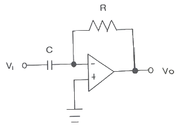
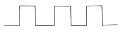
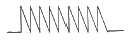
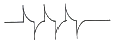
(정답률: 62%)
11. 진폭변조에서 변조율이 100[%]인 경우, 피변조파의 전력은 반송파 전력의 몇 배가 되는가? (단, Pm : 피변조파의 전력, Pc : 반송파의 전력)
- Pm = Pc
- Pm = 2Pc
- Pm = (1/2)Pc
- Pm = (3/2)Pc
(정답률: 57%)
12. 과부하 잡음이 없는 경우 PCM양자화 시 사용 비트 수를 1 비트 증가시키면 S/Nq(신호전력 대 양자화 잡음 전력비)는 몇 [dB] 개선(증가) 되는가?
- 3 [dB]
- 6 [dB]
- 9 [dB]
- 12 [dB]
(정답률: 50%)
13. 다음 디지털 변조방식 중 오류확률이 가장 낮은 것은?
- 4진 QAM
- 4진 FSK
- 4진 DPSK
- 4진 ASK
(정답률: 62%)
14. 다음 중 디지털 변조 방식의 스펙트럼 효율(Spectrum Efficiency)을 옳게 설명한 것은?
- 한정된 주파수 스펙트럼 범위 내에서 운용되는 채널의 수
- 변조 신호의 크기와 1초 동안 전송되는 비트수의 곱
- 변조 신호의 대역폭 1[Hz] 당 1초 동안 전송되는 비트의 수
- 변조 신호의 출력과 전송 가능 최대 거리의 곱
(정답률: 50%)
15. 다음 중 멀티바이브레이터의 특징으로 옳은 것은?
- 파형에 고차의 고조파를 포함하고 있다.
- 부성저항을 이용한 발진기이다.
- 극초단파 발생에 적합하다.
- 회로의 시정수로 신호의 진폭이 결정된다.
(정답률: 40%)
16. 다음 중 3초과 코드(Excess-3 Code)에 대한 설명으로 옳지 않은 것은?
- 자기보수형 코드이다.
- 언웨이티드 코드의 대표적이기도 하다.
- 8421 code에 3(10)을 더하여 만든 것이다.
- BCD 코드보다 연산이 어렵다.
(정답률: 57%)
17. 다음 회로는 어떤 논리 게이트를 나타낸 것인가?
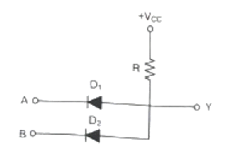
- NOR
- AND
- OR
- NAND
(정답률: 46%)
18. 다음 중 하향 비동기식 카운터에 대한 설명으로 옳은 것은?
- 0000에서 1111까지 카운트 한다.
- 출력주파수는 1/2, 1/4, 1/8, 1/16 갖는 구형파가 출력된다.
- 4번째 클릭펄스 10진수 카운터 상태는 4이다.
- 펄스의 상승에지(Rising Edge)에서 트리거된다.
(정답률: 48%)
19. 다음 중 X, Y 두 입력을 갖는 2진 비교기에 대한 내용으로 틀린 것은?
- X = Y 일 때,
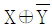
- X ≠ Y 일 때, X ⊕ Y
- X ＞ Y 일 때,
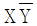
- X ＜ Y 일 때,
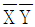
(정답률: 50%)
20. 20진수 X-Y를 계산하기 위한 반감산기 회로에서 자리내림(B: Borrow)을 출력하기 위한 회로는?
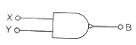
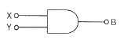
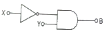
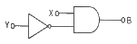
(정답률: 48%)
2과목: 정보통신기기
21. 컴퓨터 시스템의 주기억장치의 역할이 아닌 것은?
- 데이터처리를 위한 데이터 저장
- 데이터처리를 위한 명령어 저장
- 출력 또는 보조기억장치로 전송을 위하여 대기된 처리데이터 저장
- 데이터처리를 위해 영구적으로 데이터를 저장
(정답률: 66%)
22. 정보통신시스템을 운용하기 위한 소프트웨어 파일관리 기능만을 열거한 것으로 적합하지 않은 것은?
- 매체공간 관리기능
- 기억소자 관리기능
- 에러제어 관리기능
- 엑세스 제어기능
(정답률: 57%)
23. 다음 중 ADSL 서비스 방식에서 가입자 댁내 장비는?
- 다중화장치(DSLAM)
- 네트워크접속장치(NAS)
- EMS
- 모뎀(Modem)
(정답률: 75%)
24. 서버가 호스트(Host)에게 전송할 데이터가 있는지를 확인하는 것을 무엇이라 하는가?
- 링크
- 폴링
- 셀렉션
- 어드레싱
(정답률: 69%)
25. 다음 중 광가입자의 가입자별로 하나의 파장을 대응시켜 고속전송이 가능한 방식은?
- FDM 방식
- TDM 방식
- SDM 방식
- WDM 방식
(정답률: 64%)
26. 북미에서 사용하는 TDM 계위인 DS-1에 대한 설명으로 틀린 것은?
- 한 프레임은 24채널이 되고, 한 비트의 동기용 프레임 비트를 포함한다.
- DS-1의 전송율은 1.544Mbps이다.
- 비트 인터리빙을 통하여 5개의 DS-1신호를 조합하면 DS-2 신호를 얻을 수 있다.
- 28개의 DS-1 신호를 조합하면 DS-3가 되어 전송율은 44.736Mbps 이다.
(정답률: 54%)
27. LAN 장비에서 허브의 종류가 아닌 것은?
- 더미 허브(Dummy Hub)
- 스태커블 허브(Stackable Hub)
- 라우터 허브(Router Hub)
- 인텔리전트 허브(Intelligent Hub)
(정답률: 58%)
28. 네트워크 장비인 라우터에 대한 설명으로 옳지 않은 것은?
- 네트워크 계층에서 동작한다.
- 서로 다른 네트워크 간의 연결을 위해 사용된다.
- 하나의 네트워크 세그먼트 안에서 크기를 확장한다.
- 서로 다른 VLAN 간의 통신을 가능하게 해준다.
(정답률: 61%)
29. 다음 중 VoIP 서비스에 대한 설명으로 틀린 것은?
- 음성과 데이터를 하나의 망으로 전송한다.
- 인터넷 프로토콜과 연계하여 다양한 부가서비스의 제공이 가능하다.
- 인터넷 망을 이용하므로 통신요금이 저렴하다.
- 각각의 통화는 회선을 독점으로 점유하기 때문에 대역폭 사용이 비효율적이다.
(정답률: 73%)
30. 문서 팩시밀리를 종류 중 G4 등급의 특징으로 잘못된 것은?
- 디지털 신호 방식 및 디지털 전용망을 사용
- A4 원고 3~5초 내에 전송 가능
- 디지털 신호방식으로 MH, MR부호화 방식으로 압축
- 고능률 부호화 방식(MMR)을 적용하여 공중 데이터망을 이용
(정답률: 55%)
31. 영상회의시스템의 영상 압축방식을 활용하고자 할 때, 가장 영상압축율이 좋은 방식은?
- MPEG-1
- MPEG-2
- H.261
- H.264
(정답률: 63%)
32. CATV의 구성을 센터계, 전송계, 단말계로 나눌 때 센터계 장치가 아닌 것은?
- 간선증폭기(Trunk Amplitier)
- 변복조기
- 채널 결합기(Combiner)
- CMTS(Cable Modem Termination System)
(정답률: 45%)
33. 다음 중 무선수신기의 주요 기능에 해당하지 않는 것은?
- 공간상에 존재하는 많은 고주파 신호 중 원하는 신호를 선택한다.
- 수신안테나로부터 수신된 미약한 고주파의 반송파 신호를 적당한 크기로 증폭한다.
- 고주파 반송파 신호를 적절한 중간주파수 대역의 신호를 바꾼다.
- 중간주파수 대역에서 원래의 정보신호를 복원하기 위하여 고주파 신호와 혼합한다.
(정답률: 52%)
34. 다음 중 위성통신 방식의 종류를 구분하는 요소로서 적합하지 않은 것은?
- 위성 중계기의 기능
- 위성 중계기의 위치
- 위성 중계기의 수량
- 위성 중계기의 고도
(정답률: 64%)
35. 위성통신을 위한 최적의 주파수 대역으로 전파의 창(Radio Window)이라 불리우는 주파수 대역은?
- 1 ~ 10[kHz]
- 1 ~ 10[MHz]
- 1 ~ 10[GHz]
- 1 ~ 10[THz]
(정답률: 61%)
36. 다음 중 위성통신을 위한 시스템의 구성요소에 해당하지 않는 것은?
- 지구국
- 관제국
- 통신위성
- 위성발사체
(정답률: 64%)
37. 다음 중 멀티미디어 단말기의 기본 구성 요소가 아닌 것은?
- 처리장치
- 저장장치
- 미디어 입출력장치
- 신호 중계장치
(정답률: 56%)
38. 다음 중 전자칩을 부착하고 무선통신기술을 이용하여 사물의 정보를 확인하고 감지하는 기술은?
- WiBro
- Telemetics
- RFID
- DMB
(정답률: 68%)
39. 다음 중 뉴미디어의 특징이 아닌 것은?
- 즉시성과 공평성
- 간편성과 수익성
- 개인화와 능동성
- 단일화와 단방향성
(정답률: 69%)
40. 다음 중 멀티미디어 동영상 데이터의 파일 저장 방식이 아닌 것은?
- AVI
- MPEG
- MOV
- GUI
(정답률: 68%)
3과목: 정보전송개론
41. 다음 설명에 해당하는 것은 무엇인가?
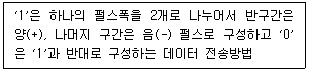
- 바이폴라 펄스
- 맨체스터 펄스
- 차동 펄스
- 단주(단류) RZ 펄스
(정답률: 58%)
42. T1 전송시스템은 한 프레임 당 125[μs] 시간 동안 총 24채널을 다중화 한다. 이 때 전송로 상의 전송속도는 얼마인가?
- 1.544[Mbps]
- 2.048[Mbps]
- 6.312[Mbps]
- 1.536[Mbps]
(정답률: 62%)
43. 다음 중 1비트를 사용하며, 2레벨 양자화를 사용하는 변조방식은?
- TDM
- DPCM
- PCM
- DM
(정답률: 53%)
44. 다음 중 원천부호화(Source Coding) 방식에 속하지 않는 것은?
- DPCM
- DM
- 선형예측코딩(LPC)
- FDM
(정답률: 36%)
45. 다음 중 UTP케이블에 대한 설명으로 틀린 것은?
- 일반적인 전송속도는 10~100[Mbps]이다.
- 커넥터로는 RJ-45와 RJ-11을 사용한다.
- 설치비용이 비교적 저렴하다.
- 케이블 내부에는 금속 차폐막을 사용하고 있다.
(정답률: 61%)
46. 다음 중 STP케이블 설명으로 틀린 것은?
- 외부 잡음과 간섭에 대한 영향이 적다.
- UTP보다 성능이 좋다.
- UTP에 비해 짧은 전송거리를 갖는다.
- 차폐 이중 나선이다.
(정답률: 56%)
47. 다음 중 동축케이블 구성요소로 틀린 것은?
- 외부도체
- 내부도체
- 절연체
- 코어
(정답률: 63%)
48. 어떤 신호가 전송매체상의 A지점과 B지점 구간에서 전송되는 경우, 전력 레벨이 1/2로 감소하였다면, A-B 구간에서 발생하는 손실은 약 얼마인가?
- 1[dB]
- 2[dB]
- 3[dB]
- 4[dB]
(정답률: 56%)
49. 디지털 통신시스템의 수신기에서 수신되는 비트열(Bit Stream)의 클럭 또는 비트 파형의 전이(Transition)를 정확히 재생하는 동기 방식은?
- 비트 동기
- 문자 동기
- 플래그 동기
- 프레임 동기
(정답률: 56%)
50. 다음 중 공통선 신호방식에서 No.6 신호방식의 설명으로 틀린 것은?
- 여섯 번째 신호방식이다.
- 신호회선당 최대 2,048 회선을 지원한다.
- 신호회선당 최대 4,096 회선을 지원한다.
- 신호회선으로는 2400[bps]의 아날로그 전송회선을 사용한다.
(정답률: 53%)
51. 다음 중 Broadband 변조방식의 내용으로 틀린 것은?
- 무선에서 적절한 크기의 안테나 및 효율적인 전력의 사용을 가능하게 한다.
- 변조 기법을 사용하면 광범위한 주파수 영역을 효과적으로 사용할 수 있다.
- 무선통신에서 주로 사용한다.
- 전송매체는 주로 동선 또는 광섬유 등을 통해 전송된다.
(정답률: 55%)
52. 다음 중 OSI 참조모델에 대한 설명으로 맞지 않는 것은?
- 개방형 시스템의 상호 통신을 위한 참조 모델이다.
- ISO에서 동일 기종 간의 컴퓨터 통신을 위한 구조 개발에 의해 만들어진 규정이다.
- 통신 기능을 7계층으로 나누어 각 계층의 기능을 정의하였다.
- 서로 다른 컴퓨터나 정보통신시스템 간의 연결과 원활한 정보교환을 위한 표준화된 절차이다.
(정답률: 54%)
53. 인터넷망에서 노드 역할을 하고 있는 Router의 기능은 OSI 7 Layer 의 참조모델에서 보면, 어떤 계층의 기능을 주로 수행하는가?
- 데이터링크 계층
- 네트워크 계층
- 전송 계층
- 응용 계층
(정답률: 56%)
54. 정보통신 관련 표준안을 제안하는 기구가 아닌 것은?
- ISO
- ITU-T
- ISDN
- ANSI
(정답률: 57%)
55. 다음 중 네트워크 토폴로지(Topology)에 해당하지 않는 것은?
- Star형
- Mesh형
- Bus형
- Node형
(정답률: 58%)
56. IP address 체계의 B class에서 하나의 네트워크에서 수용할 수 있는 최대 호스트 수는 몇 개인가?
- 128개
- 254개
- 65,534개
- 16,277,214개
(정답률: 59%)
57. IP address 체계의 A class에서 사용 가능한 네트워크 비트 수는?
- 7비트
- 14비트
- 21비트
- 28비트
(정답률: 65%)
58. IP address 체계에서 class A의 사설 주소 블록으로 예약되어 있는 것은 무엇인가?
- 10.x.x.x
- 127.x.x.x
- 172.16.x.x
- 192.168.0.x
(정답률: 61%)
59. HDCL 프레임의 데이터 블록의 앞 부분에 있는 3개의 필드 F(Start Flag), A(Address), C(Control)에 할당된 크기의 총합은 몇 비트인가?
- 24[bit]
- 21[bit]
- 18[bit]
- 12[bit]
(정답률: 59%)
60. CRC 방식에서 생성 다항식이 X6 + X4 + X2 + 1 일 때 이름 비트부호를 표현하면?
- 0101010
- 1010101
- 101010
- 010101
(정답률: 57%)
4과목: 전자계산기일반 및 정보설비기준
61. 주 기억장치에 저장된 명령어들 하나하나씩 인출하여 연산코드 부분을 해석한 다음 해석한 결과에 따라 적합한 신호로 변환하여 각각의 연산 장치와 메모리에 지시 신호를 내는 것은?
- 연산 논리 장치(ALU)
- 입출력 장치(I/O Unit)
- 채널(Channel)
- 제어 장치(Control Unit)
(정답률: 52%)
62. 다음 중 주소를 기억하는 레지스터에 해당하지 않는 것은?
- MAR
- PC
- SP
- AC
(정답률: 52%)
63. 다음 중 메모리 인터리빙의 사용 목적으로 맞는 것은?
- 메모리 액세스의 효율 증대
- 입축력 장치의 증설
- 전력 소모 감소
- 주소지정 방식의 탈피
(정답률: 60%)
64. 다음 중 입·출력 겸용장치에 해당하지 않는 것은?
- 자기디스크
- 콘솔(Console)
- OCR(Optical Character Reader)
- 자기테이프
(정답률: 55%)
65. 10진법 0.625를 2진수로 변환한 값은?
- 0.111
- 0.1001
- 1.011
- 0.101
(정답률: 49%)
66. 2진수 (1101.1011)을 10진수로 표시한 값은 얼마인가?
- 11.8125
- 13.8125
- 11.6875
- 13.6875
(정답률: 46%)
67. 다음 자료는 기수 패리티 비트를 포함하고 있다. 잘못된 비트는 어느 것인가? (단, 가장 오른쪽 열에 있는 비트가 패리티 비트이고, 가장 아래쪽에 있는 것이 패리티 워드이다.)
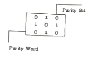
- 1행 1열의 비트
- 1행 2열의 비트
- 2행 1열의 비트
- 2행 2열의 비트
(정답률: 53%)
68. 다음은 소프트웨어에 대한 설명으로 틀린 것은?
- 소프트웨어는 시스템 소프트웨어와 응용 소프트웨어로 분류된다.
- 시스템 소프트웨어는 운영체제, 통신 제어 시스템 등이 있다.
- 응용 소프트웨어는 특정한 업무를 위해 개발된 프로그램이다.
- 시스템 소프트웨어는 오라클, MySQL 등이 있다.
(정답률: 60%)
69. 다음 중 형변환 연산이 아닌 것은?
- Complex
- Float
- Suffix
- Int
(정답률: 48%)
70. 다음 중 마이크로 프로세서의 주소 지정 방식이 컴퓨터 시스템에 미치는 영향이 아닌 것은?
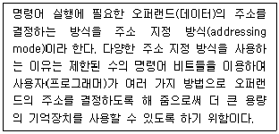
- 주소 지정 방식에 따라 전자우편을 보내는 방법이 달라진다.
- 포인터, 카운터 인덱싱, 프로그램 재배치 등의 편의를 사용자에게 제공한다.
- 명령어의 주소 필드를 줄인다.
- 숙련된 프로그래머의 경우 명령의 수 또는 수행 시간에 비해 훨씬 효율적인 프로그램을 작성할 수 있다.
(정답률: 50%)
71. 다음 중 “전기통신설비”를 가장 바르게 나타내고 있는 것은?
- 전기통신을 하기 위한 기계·기구·선로 기타 전기통신에 필요한 장비
- 전기통신을 하기 위한 부호·문헌·음향 기타 전기통신에 필요한 장비
- 전기통신을 하기 위한 송·수신간의 전송선로를 구성하는 설비와 이들의 부속설비
- 전기통신산업에 제공하기 위한 장치·기기·부품·선조와 이들의 부속장비
(정답률: 57%)
72. 방송통신설비에 사용하는 용어 중 교환설비에 대한 설명이다. 괄호에 들어 갈 내용으로 맞게 나열된 것은?
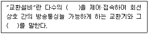
- 전기통신회선, 부대설비
- 전기통신회선, 예비설비
- 정보통신회선, 부대설비
- 정보통신회선, 예비설비
(정답률: 48%)
73. 다음 중 일반적 조건의 분계점 및 분계점에서의 접속기준에 관한 내용으로 잘못된 것은?
- 사업용방송통신설비의 분계점은 사업자 상호간 합의에 따른다.
- 방송통신망 간 접속기준은 사업자 상호간의 합의에 의한다.
- 사업용방송통신설비와 이용자방송통신설비의 분계점은 국립전과 연구원이 고시한다.
- 분계점에서의 접속방식은 간단하게 분리·시험할 수 있어야 한다.
(정답률: 49%)
74. 다음 중 전송설비 및 선로설비의 전력유도전압에 대한 설명으로 틀린 것은?
- 이상시 유도위험전압의 제한치는 650[V]이다.
- 해당 방송통신설비의 통신선로가 왕복 2개의 선으로 구성되어 있는 경우에는 기기오동작 유도종전압 제한치를 적용하지 않는다.
- 상시 유도위험종전압은 60[V]이다.
- 잡음전압의 제한치는 0.5[V]이다.
(정답률: 44%)
75. 다음 중 정보통신공사업법에서 정의한 하도급에 관한 설명으로 바른 것은?
- 도급 받은 공사의 일부에 대하여 수급인이 제3자와 체결하는 계약을 말한다.
- 원도급 받은 공사의 전부에 대하여 수급인이 제3자와 체결하는 계약을 말한다.
- 원도급·하도급·위탁 기타 명칭여하에 불그하에 공사를 완성할 것을 약정하는 계약을 말한다.
- 발주자가 도급 일의 결과에 대하여 대가를 지급할 것을 약정하는 계약을 말한다.
(정답률: 52%)
76. 공사업자의 감리 제한 규정을 위반하여 공사와 감리를 함께한 자에 대한 벌칙은?
- 3년 이하의 징역 또는 2천만원 이하의 벌금에 처한다.
- 1년 이하의 징역 또는 2천만원 이하의 벌금에 처한다.
- 500만원 이하의 벌금에 처한다.
- 300만원 이하의 벌금에 처한다.
(정답률: 62%)
77. 다음 중 전기통신역무의 제공 의무에 해당되지 않는 것은?
- 전기통신사업자는 정당한 사유 없이 전기통신역무의 제공을 거부하여서는 아니된다.
- 전기통신설비를 이용하여 타인의 통신을 매개 하여서는 아니된다.
- 전기통신역무의 요금은 합리적으로 결정되어야 한다.
- 전기통신사업자는 그 업무를 처리할 때 공평하고 신속하며 정확하게 하여야 한다.
(정답률: 51%)
78. 지진대책으로 하여야 하는 방송통신설비의 범위가 아닌 것은?
- 부대설비
- 통신장비
- 전원설비
- 보호설비
(정답률: 44%)
79. 다음 중 국가정보화를 추진할 때 이용자의 권익보호를 위한 시책 마련에 포함되지 않는 것은?
- 이용자 권익보호를 위한 홍보·교육 및 연구
- 이용자의 불만 및 피해에 대한 신속·공정한 구제조치
- 이용자의 명예·생명·신체 및 재산상의 위해 방지
- 이용자에 대한 공정한 가치 평가와 분석
(정답률: 53%)
80. 공사를 설계하는 사람이 정보통신공사업법 및 같은 법 시행령에서 정하는 기술기준에 적합하게 설계하여야 한다면, 감리원은 무엇에 적합하도록 공사를 감리하여야 하는가?
- 품질기준 및 안전기준
- 기술기준 및 설계기준
- 공사시방서 및 내역서
- 설계도서 및 관련규정
(정답률: 48%)